and the expressions in the second and third columns refer always to principal
values:
and the expressions in the second and third columns refer always to principal
values:
| Up | Next | Prev | PrevTail | Tail |
Additional documentation and examples can be found in the files efellip.tex, eftheta.tst and efweier.tst in the packages/ellipfn directory.
Author: Lisa Temme and Alan Barnes with contributions from Winfried Neun and several others.
The package ELLIPFN is designed to provide algebraic and numeric manipulations of many elliptic functions, namely:
The implementation of the functions in this and the next two subsections have been substantially revised by Alan Barnes in 2019. This is to bring the notation more into line with standard (British) texts such as Whittaker & Watson [WW69] and Lawden [Law89] and also to correct a number of errors and omissions. These changes and additions will be itemised in the relevant sections below. New subsections has been added starting in 2021 to support Weierstrassian Elliptic functions, Sigma functions, inverse Jacobi elliptic functions and finally symmetric elliptic integrals.
The functions in this subsection are for the most part autoloading; the exceptions being the subsidiary utility functions such as the AGM function, the quasi-period factors, lattice functions, derivatives of the theta functions and symmetric elliptic integrals.
The following functions have been implemented:
The following Jacobi elliptic functions are available:-
These differ somewhat from the originals implemented by Lisa Temme in that the second argument is now the modulus (usually denoted by k in most texts rather than its square m). The notation for the most part follows Lawden [Law89]. The last nine Jacobi functions are related to the three basic ones: jacobisn(u,k), jacobicn(u,k) and jacobidn(u,k) and use Glaisher’s notation. For example
|
ns(x,k) = 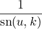 , cs(x,k) =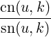 , cd(x,k) =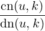 . |
All twelve functions are doubly periodic in the complex plane. The primitive periods and the positions of the zeros and poles of the functions are conveniently expressed in terms of the so-called quarter periods K(k) and iK′(k) which are complete elliptic integrals of the first kind. The details are displayed in the table below; in all cases the pole is single and the corresponding residue is given in the last column of the table. As the functions are doubly-periodic, there are, of course, infinitely many other zeros and poles. These occur at points ‘congruent’ to the points given in the table obtained by translating by 2mK + 2inK′ where m and n are arbitrary integers.
| Function | Period1 | Period2 | Zero | Pole | Residue |
| sn | 4K | 2iK′ | 0 | iK′ | 1∕k |
| ns | 4K | 2iK′ | iK′ | 0 | 1 |
| cd | 4K | 2iK′ | K | K + iK′ | −1∕k |
| dc | 4K | 2iK′ | K + iK′ | K | −1 |
| cn | 4K | 2(K + iK′) | K | iK′ | −i∕k |
| nc | 4K | 2(K + iK′) | iK′ | K | −1∕k′ |
| sd | 4K | 2(K + iK′) | 0 | K + iK′ | −i∕(kk′) |
| ds | 4K | 2(K + iK′) | K + iK′ | 0 | 1 |
| dn | 4iK′ | 2K | K + iK′ | iK′ | −i |
| nd | 4iK′ | 2K | iK′ | K + iK′ | −i∕k′ |
| sc | 4iK′ | 2K | 0 | K | −1∕k′ |
| cs | 4iK′ | 2K | K | 0 | 1 |
All other periods of the Jacobi functions can be expressed as linear combinations of the two primitive periods with integer coefficients. Thus, for example, 4iK′ is a period of cn as
| 4iK′ = 2(K + K′) − 4K |
Extensive rule lists are provided for differentiation of these functions with respect to either argument, for argument shifts by integer multiples of the two quarter periods K(k) and iK′(k) and finally Jacobi’s transformations for a purely imaginary first argument.
Rules are also provided for the values of the twelve Jacobi functions at the ‘eighth’ period values: K∕2, iK′∕2 and (K + iK′)∕2. For these rules to yield correct values it is essential that the switch precise_complex is ON, otherwise Reduce will often incorrectly simplify the results if they involve complex values of k or k′. It should also be noted that the rule for dn((K(k) + iK′(k))∕2,k) differs from that on DLMF:NIST which appears to give incorrect values for some values of k. The rule used in REDUCE is not only simpler, but appears to give correct values in all cases as do the derived rules for cd, sd, nd, ds and dc. It is derived from the third of the identities (2.2.19) of Lawden [Law89] with u = −(K(k) + iK′(k))∕2 and the corresponding identities for sn and cn on the DLMF NIST site.
Some care must be exercised when applying the ‘eighth’ period rules when the modulus k belongs to the negative real or imaginary axes as K(k) and all twelve Jacobi functions sn(x,k) etc. are even functions of the modulus k. The rule should be applied when the modulus has no assigned value and then resimplifying the result after assigning the modulus its required value.
Complex split functions have recently been implemented for the 12 Jacobi functions for the cases when the modulus k is either real or imaginary. Thus REPART and IMPART will now return rational expressions involving the twelve Jacobi functions with real arguments and a real modulus |k| < 1. As far as I (AB) am aware there are no known methods of implementing split functions for general complex values of the modulus.
Four useful rule lists TO_SN, TO_CN, TO_DN and NO_GLAISHER are provided for user convenience. The first TO_SN replaces occurences of the squares of cn and dn in favour of the square of sn using the ‘Pythagorean’ identities. TO_CN and TO_DN apply these identities to replace squares in favour of cn and dn respectively. At most one of these rule sets should be active at any one time to avoid a potential infinite recursion in the simplification. The fourth rule list NO_GLAISHER replaces all occurences of the nine subsidiary Jacobi elliptic functions ns, sc, sd, …by reciprocals and quotients of the ‘basic’ Jacobi elliptic functions sn, cn and dn.
A fifth rule list JACOBIADDITIONRULES applies addition rules when the first argument of any Jacobi function is a sum. Note that this rule list is NO LONGER active by default. There are many equivalent ways of expressing the right-hand sides of these rules. Previously all the rules were expressed using only the ‘basic’ Jacobi functions: sn, cn and dn. Currently, however, the right-hand sides of the rules for the reciprocal and quotient Glaisher functions ns, cs, sd etc are expressed using the three Glaisher functions with the same ‘denominator’ as on the left-hand side. Thus the rule for ns is expressed in terms of ns, cs and ds whilst that for cd is expressed in terms of nd, cd and sd whereas the rules for the three ‘basic’ functions are unchanged and use only sn, cn and dn. Note, however, that the previous form of these rules will be obtained if the rule-list NO_GLAISHER is also active.
If both the switches rounded and complex are ON and both arguments of a Jacobi function are purely numerical, it will be evaluated numerically The numerical evaluation of the Jacobi functions now uses their definitions in terms of theta functions as these are valid for all complex values of the argument and modulus. Note that as a consequence it is now necessary that the switch complex is ON even if both the argument and the modulus are real.
The traditional AGM and ϕ-function based algorithm which was previously used when the argument and modulus are both real and |k| < 1 as been superceded. It appears that there was a problem with the numerical evaluation of dn, nd, sd, ds, cd, dc resulting in largish rounding errors. There was no problem with previous evaluation of sn, ns, cn, nc, sc, cs and these produced the same results (modulo acceptable rounding errors) as the theta function based method now used.
| am(u,k) = ∫ 0udn(z,k)dz. |
As dn(z,k) has poles with residue −i at points z = (4m + 1)iK′(k) + 2nK(k) and others with residue +i when z = (4m + 3)iK′(k) + 2nK(k) where m and n are arbitrary integers, am(z,k) has logarithmic singularities at these points. In fact the amplitude function is multivalued with its principal value v, say, being given by choosing the contour in the defining integral to be the straight line segment between 0 and u. Other values are given by v + 2nπ where n is an arbitrary integer and depend on how the chosen contour winds around the logarithmic branch points. To obtain a single valued function it is necessary to introduce branch cuts between the points iK′(k) and 3iK′(k) and between corresponding congruent branch points.
A rule list is provided for to simplify this function for special values of the arguments and for differentiation with respect to either argument. When the switches ROUNDED and COMPLEX are both ON and both arguments are numeric, REDUCE will attempt to evaluate jacobiam(z,k) numerically. Several possible methods are available to evalaute the function, for example summation of its Fourier series and an AGM-based method due to Sala (see DLMF:NIST for more details. Currently the AGM-based method is used and this certainly produces reliable results if the modulus k is real and |ℑ(z)| < K′(k). These agree with those produced by the Fourier series method although rounding errors become significant as |ℑ(z)| approaches K′(k). If k is complex both methods produce the same results when the imaginary parts of k and z are not too large, but it is difficult to give precise bounds on the size of these.
For general values of z and k the AGM-based method always produces a value except perhaps at the logarithmic branch points but these, I believe, are not correct as they fail to satisfy the identity
| sn(z,k) = sin(am(z,k)) |
where sn is calculated using the theta function method. The Fourier series method fails to converge in these cases and so is not used except for comparison purposes. Currently an alternative method of evaluation due to Sala is being investigated; it uses the Poisson summation formula and is claimed to be valid for all z and k except at branch points.
This section briefly describes several procedures which are primarily intended for use in the numerical evaluation of the various elliptic functions and integrals rather than for direct use by users.
A procedure to evaluate the AGM of initial values
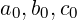
exists as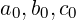
) and will returnTo determine the Elliptic Integrals K(m), E(m) we use initial values
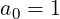
;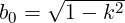
;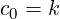
.
The procedure to evaluate the Descending Landen Transformation of ϕ and α uses the following equations:
| (1 + sinαn+1)(1 + cosαn) = 2 | where αn+1 < αn, | ||
| tan(ϕn+1 − ϕn) = cosαn tanϕn | where ϕn+1 > ϕn. |
It can be called using landentrans(ϕ0, α0) and will return
{{ϕ0,…,ϕn},{α0,…,αn}}.
The following functions have been implemented:
These again differ somewhat from the originals implemented by Lisa Temme as the second argument is now the modulus k rather that its square. Also in the original implementation there was some confusion between Legendre’s form and Jacobi’s form of the incomplete elliptic integrals of the second kind; E(u,k) denoted the first in numerical evaluations and the second in the derivative formulae for the Jacobi elliptic functions with respect to their second argument. This confusion was perhaps understandable as in the literature some authors use the notation E(u,k) for the Legendre form and others for Jacobi’s form.
To bring the notation more into line with that in the NIST Digital Library of Mathematical Functions and avoid any possible confusion, E(u,k) is used for the Legendre form and ℰ(u,k) for Jacobi’s form. This differs from the 2019 version of this section which followed Lawden [Law89] chapter 3, where the notation D(ϕ,k) and E(u,k) were used for the Legendre and Jacobi forms respectively.
A number of rule lists have been provided to implement, where appropriate, derivatives of these functions, addition rules and periodicity and quasi-periodicity properties and to provide simplifications for special values of the arguments.
The Elliptic F function can be used as EllipticF(phi,k) and will return the value of the Incomplete Elliptic Integral of the First Kind:
| F(ϕ,k) = ∫ 0ϕ(1 − k2 sin2𝜃)−1∕2d𝜃. |
This is actually closely related to the inverse Jacobi function arcsn; in fact for −π∕2 <= ℜϕ <= π∕2:
| F(ϕ,k) = arcsn(sinϕ,k) |
.
The Elliptic K function can be used as EllipticK(k) and will return the value of the Complete Elliptic Integral of the First Kind:
| K(k) = F(π∕2,k) = ∫ 0π∕2(1 − k2 sin2𝜃)−1∕2d𝜃. |
This is one of the quarter periods of the Jacobi elliptic functions and is often used in the calculation of other elliptic functions. The complementary Elliptic K′ function can be used as EllipticK!′(k). Note that iK′(k) is the other quarter period of the Jacobi elliptic functions.
The Elliptic E function comes with either one or two arguments; used with two arguments as EllipticE(u,k) it will return the value of Legendre’s form of the Incomplete Elliptic Integral of the Second Kind:
| E(ϕ,k) = ∫ 0ϕd𝜃. |
When called with one argument EllipticE(k) will return the value of the Complete Elliptic Integral of the Second Kind:
|
E(k) = E(π∕2,k) = ∫
0π∕2 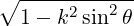 d𝜃. |
The complementary Elliptic E′ function can be used as EllipticE!′(k).
The complete integrals are actually multi-valued; to obtain single valued functions it is necessary to introduce branch cuts. For K(k) and E(k) these are (−∞,−1] ∪ [1,+∞). The functions are continuous if the two components of the branch cut are approached from the second and fourth quadrants respectively. For K′(k) and E′(k) the branch cut is (−∞,0] with continuity if the cut is approached from the second quadrant. For more details, see Lawden [Law89] sections 8.12 to 8.14. The principal values of K(k) and E(k) are even functions of k.
The numerical evaluation of the complete integrals is more robust and uses symmetric elliptic integrals. They should now work for all complex values of the modulus and return the principal value of the integral concerned. Note that for all complex values of k, the well-known identities:
|
K′(k) = K( 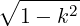 ) E′(k) = E(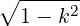 ). |
are not actually valid for the principal values of the functions concerned. It is necessary that ℜk >= 0 with in addition if ℜk = 0, ℑk >= 0. One of the consequences of this is that the principal values of K′(k) and E′(k) are not even functions.
General values for the four complete integrals together with the principal value when
ℜk < 0 are given in the table below, where n is an arbitrary integer, k′ =
and the expressions in the second and third columns refer always to principal
values:
| Function | General Value | Principal Value when ℜ(k) < 0 |
| and when ℜ(k) = 0 and ℑ(k) < 0 | ||
| K(k) | K(k) − 2inK(k′) | K(−k) |
| K′(k) | K(k′) − 4inK(k) | K(k′) ∓ 2iK(−k) |
| E(k) | E(k) − 2in(K(k′) − E(k′)) | E(−k) |
| E′(k) | E(k′) − 4in(K(k) − E(k)) | E(k′) ∓ 2i(K(−k) − E(−k)) |
In the third column the upper and lower alternative signs are taken when k lies in the second and third quadrants respectively.
One quite subtle point arises: although the twelve Jacobi elliptic functions and K(k) are even functions of the modulus k, the quarter period iK′(k) is not (see the second row of the table above). If ℜ(k) > 0, then for example 4K(k) and 2iK′(k) = 2iK(k′) are primitive periods of sn(x,k). However, if we use −k as the modulus, the first primitive period obtained is the same (since K(k) is an even function) but the second is different namely: 2iK′(−k) = 2iK(k′) ± 4K(k). This explains why some of the values returned by the ‘eighth’ period rules for sn etc. are not even functions of k.
The Elliptic D function also comes with either one or two arguments; used with two arguments as EllipticD(u,k) it will return the value of an alternative form of Legendre’s Incomplete Elliptic Integral of the Second Kind:
|
D(ϕ,k) = ∫
0ϕ 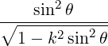 d𝜃. |
When called with one argument EllipticD(k) will return the value of the Complete Elliptic Integral of the Second Kind:
|
D(k) = D(π∕2,k) = ∫
0π∕2 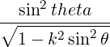 d𝜃. |
The integrals of the first and second kind are related:
| E(k) = K(k) − k2D(k), E(ϕ,k) = F(ϕ,k) − k2D(ϕ,k). |
For all the elliptic integrals, rule lists are provided for simplification for special values of the argument(s), differentiation with respect to either argument and shift rules for the incomplete integrals so that their first argument lies in the range 0 <= ϕ <= π∕2.
If the arguments of the elliptic integral function are numeric and the switches ROUNDED and COMPLEX are both ON, the numerical value will be returned. The numerical evaluation routines should now succeed for all complex values of the arguments provided, of course, the corresponding integral exists. The incomplete integrals F(ϕ,k), E(ϕ,k), D(ϕ,k) and Π(ϕ,a,k) are all multi-valued as there are branch points in the defining integrands when sin(ϕ) = ±1 and k sin(ϕ) = ±1.
For mumerical evaluation when the first argument ϕ is complex there are issues that arise which are absent when ϕ is real. One might use the the straight line contour from 𝜃 = 0 to 𝜃 = ϕ, but this is leads to integrals that are difficult to evaluate. When |ℜϕ|≤ π∕2, the change of variable x = sin𝜃 is applied and the value returned uses the straight line contour between x = 0 and x = sin(ϕ). This will produce a different value if the loop formed by the two contours encloses a branch point. When |ℜϕ| > π∕2 the contour used is the straight line segment along the real axis from 0 to the multiple of π nearest to ϕ followed by the straight line segment from between x = 0 and x = sin(ϕ). When ϕ is real the contours in the 𝜃 and x planes coincide. Other contours between the two endpoints will yield different values depending on how the contour winds around the two branch points.
Note also that if the contour contains a branch point, there is sign ambiguity as the branch point is crossed depending on which branch of the square root in the integrand is chosen. It seems logical to choose the principal branch.
For example when k > 1 & 1∕k < y < 1
|
∫
0y 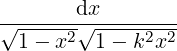 |
is taken to be
|
∫
01∕k 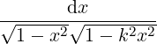 − i∫ 1∕ky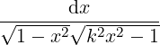 . |
The Elliptic Π function can be used as EllipticPi( ) and will return the value of the Elliptic Integral of the Third Kind.
The Elliptic Π function comes with either two or three arguments; when called with three arguments EllipticPi(phi,a,k) will return the value of the Incomplete Elliptic Integral of the Third Kind:
|
Π(ϕ,a,k) = ∫
0ϕ 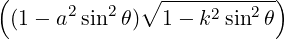 −1d𝜃. |
For −π∕2 ≤ℜϕ ≤ π∕2, the incomplete integral may be written in the form:
|
Π(ϕ,a,k) = ∫
0sinϕ 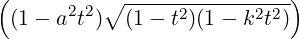 −1dt. |
When called with two arguments as EllipticPi(a,k) it will return the value of the Complete Elliptic Integral of the Third Kind:
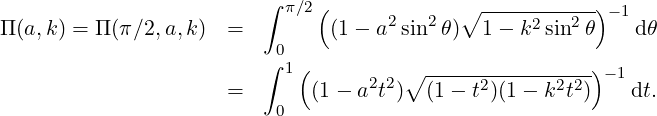
For certain values of a namely 0, ±1 and ±k the integrals reduce to elliptic integrals of the first and second kinds.
The Jacobi E function can be used as jacobiE(u,k); it will return the value of Jacobi’s form of the Incomplete Elliptic Integral of the Second Kind:
| ℰ(u,k) = ∫ 0udn2(v,k)dv. |
The relationship between the two forms of incomplete elliptic integrals can be expressed as
| ℰ(u,k) = E(am(u),k). |
Note that
| E(k) = ℰ(K(k),k) = ∫ 0K(k)dn2(v,k)dv. |
On a GUI that supports calligraphic characters (NB. this is now the case with the CSL GUI), there is no problem and it is rendered as ℰ(u,k) in accordance with NIST usage. On non-GUI interfaces the Jacobi E function is rendered as E_j.
This can be called as jacobiZeta(u,k) and refers to Jacobi’s (elliptic) Zeta function Z(u,k) whereas the operator Zeta will invoke Riemann’s ζ function. It is closely related to Jacobi’s Epsilon function jacobie; in fact
| Z(u,k) = ℰ(u,k) − uE(k)∕K(k). |
The functions in this section are currently only intended for use for in the numerical evaluation of the ‘classical’ elliptic integrals discussed above and in certain other ‘basic’ elliptic integrals. The switches ROUNDED and COMPLEX should both be ON.
Symmetric elliptic integrals are a relatively new development in the theory of elliptic functions mainly due to Carlson and his collaborators; an extensive bibliography is available on the NIST Digital Library of Mathematical Functions starting at the link DLMF:NIST, Bibliography. They have a number of advantages over more traditional approaches; see for example Advantages of Symmetry.
The fundamental symmetric integrals are all integrals over the positive real line and involve the function s(t) =
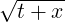
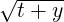
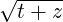
where x,y,z ∈ ℂ ∖ (−∞,0] but, except where otherwise stated, at most one of x,y,z may be zero.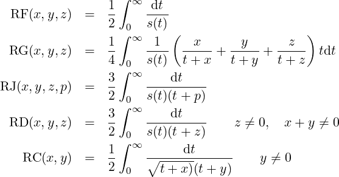
| RD(x,y,z) = RJ(x,y,z,z) RC(x,y) = RF(x,y,y) |
RD is an elliptic integral of the second kind and is only symmetric in x,y whilst RC is an elementary integral, but can be numerically evaluated efficiently without needing to distinguish between the trigonometric and hyperbolic cases. For certain special values of p the integral RJ of the third kind degenerates into integrals of the first and second kinds. For numeric evaluations it turns out that the use of RD is more convenient than that of RG (which is not currently implemented in REDUCE). For more information see §19.15-19.29 of the DLMF:NIST.
The Legendre elliptic integrals may all be expressed in terms of the symmetric integrals; the complete integrals satisfy
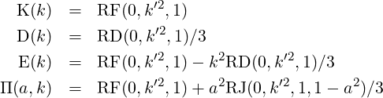
 . For the incomplete integrals, defining s = sinϕ
with −π∕2 ≤ℜϕ ≤ π∕2, we have
. For the incomplete integrals, defining s = sinϕ
with −π∕2 ≤ℜϕ ≤ π∕2, we have 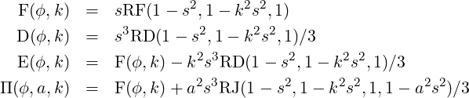
Currently the Carlson’s duplication method is used to evaluate the symmetric elliptic integrals of the first, second and third kinds RF, RD and RJ (and also the related elementary integral RC). For more details see the DLMF website: Duplication Method. In particular the REDUCE code is essentially a translation from Fortran of the code of Carlson & Notis [CN81] generalised for complex arguments and structured to avoid GO TO.
Alternatively the symmetric integral RF may be evaluated using a sequence of quadratic transformations which converge rapidly to the elementary hyperbolic integral:
| RC(X2 + Y 2,X2) = RF(X2,X2,X2 + Y 2) = arctanh(Y∕(X2 + Y 2))∕Y. |
More information on this method due to Carlson in the 1990’s may be found on the DLMF website: Quadratic Transformations.
Elliptic integrals involving the square root s(t) of a cubic or quartic polynomial in which the range of integration is an arbitrary interval [y,x] of the real line are considered. Again there are three basic kinds: first, second and third. Carlson [Car88] & [Car99] showed how each of these can be expressed as a fundamental symmetric elliptic integral of the corresponding kind over the range [0,∞). Let
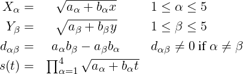
Then integrals of the first and second kinds take the form:
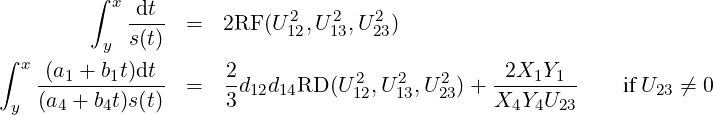
For any permutation α,β,γ,δ of 1,2,3,4, let
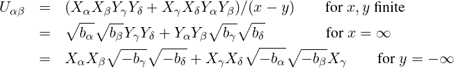
In the ‘awkward’ case when U23 = 0 or U122 + U132 = 0, the above method breaks down. However it is still possible to calculate the required integral; choose β = 2 or β = 3 so that bβ≠0 and note that
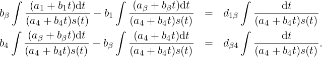
Integrals of the third kind take the form
|
∫
yx 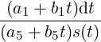 =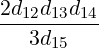 RJ(U122,U 132,U 232,U 152)+RC(S 152,Q 152) |
where

Note if the integration range is (−∞,+∞), the above formulae for integrals of all three kinds are not valid and the integral needs to be split into two at, say, zero. Similarly if the integration range is such that the integrand has branch points, the integration range will need to be split into two at each of these branch points.
In REDUCE elliptic integrals of the three kinds may be evaluated numerically when the switches ROUNDED & COMPLEX are both ON by calling the functions ellint_1st, ellint_2nd and ellint_3rd. The first two parameters are the lower and upper limits of the integration range; these are followed by 4 (or 5 for ellint_3rd) two-element lists {a1,b1},{a2,b2}….
Known bug: As pointed out by Carlson & FitzSimmons [CF00], the algorithms for RF & RJ may break down when s(t) is the product of two quadratic factors each with complex conjugate zeros x1 ±iy1 & x2 ±iy2. One of the three quantities U12,U13,U23 may be negative and this causes the algorithm to return an incorrect result. This error only arises when the crossing point (neccessarily real) of the diagonals of the parallellogram in the complex plane formed by the four zeros of s(t) lies inside the range of integration. The algorithm also appears to produce the correct result when the crossing point is inside the range of integration but is ‘sufficiently close’ to either end of the range – the precise condition appears to be unknown. In the same paper Carlson & FitzSimmons propose a modified algorithm of the same ilk to overcome these difficulties, however it is yet to be implemented in REDUCE.
In this subsection some of the advantages of symmetry are illustrated; the formula for the integral of the first kind replaces the 28 formulae in Gradshteyn and Ryzhik. For the cubic case one of the factors in s(t) is simply taken to be unity whilst for cases of the form
|
∫
αβ 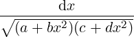 |
one must use the substitution t = x2 to obtain
|
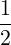 ∫ α2β2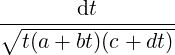 |
Moreover the restriction that one limit of integration be a branch point of the integrand is eliminated without doubling the number of standard integrals in the result. Similarly the formula for the integral of the second kind replaces no less than 144 cases in Gradshteyn and Ryzhik (72 each for the quartic and cubic cases). For cases where the numerator in the integrand is unity one simply takes a1 = 0,b1 = 1 and if there is to be no apparent term of the form (a4 + b4t)3∕2 in its denominator one takes a4 = 0,b4 = 1.
When 0 ≤ ϕ ≤ π∕2, the fundamental integrals of the first, second and third kinds F(ϕ,k), E(ϕ,k), D(ϕ,k) and Π(ϕ,a,k) may be written as
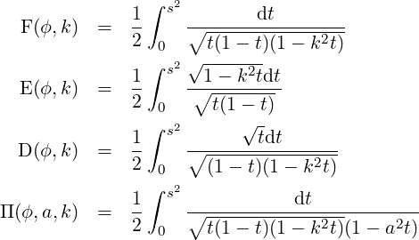
Five utility functions are provided:
These are only operative when the switch rounded is on and their argument is numerical. The first pair relate the nome q of the theta functions with the moduli k and k′ =
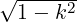
of the associated Jacobi elliptic functions.The second pair return the quarter periods K and K′ respectively of the Jacobi elliptic functions associated with the nome q.
Finally, nome(k) returns the nome q associated with the modulus k of a Jacobi elliptic function and is essentially the inverse of nome2mod.
These theta functions differ from those originally defined by Lisa Temme in a number of respects. Firstly four separate functions of two arguments are defined:
rather than a single function with three arguments (with the first argument taking integer values in the range 1 to 4). Secondly the periods are 2π,2π,π and π respectively (NOT 4K, 4K, 2K and 2K). Thirdly the second argument is the modulus τ = a + ib where b = ℑτ > 0 and hence the quasi-period is πτ.
The second parameter was previously the nome q where |q| < 1. As a consequence elliptictheta1 and elliptictheta2 were multi-valued owing to the appearance of q1∕4 in their defining expansions. elliptictheta3 and elliptictheta4 were, however, single-valued functions of q.
Regarded as functions of τ, elliptictheta1 and elliptictheta2 are single-valued functions. The nome is given by q = exp(iπτ) so that the condition ℑ(τ) > 0 ensures that |q| < 1. Note also in this case q1∕4 is interpreted as exp(iπτ∕4) rather than the principal value of q1∕4. Thus, τ, 2 + τ, 4 + τ and 6 + τ produce four different values of both elliptictheta1 and elliptictheta2 although they all correspond to the same nome q.
The four theta functions are defined by their Fourier series:
| 𝜗1(z,τ) | = 2eiπτ∕4 ∑ n=0∞(−1)nqn2+n sin(2n + 1)z | ||
| 𝜗2(z,τ) | = 2eiπτ∕4 ∑ n=0∞qn2+n cos(2n + 1)z | ||
| 𝜗3(z,τ) | = 1 + 2∑ n=1∞qn2 cos2nz | ||
| 𝜗4(z,τ) | = 1 + 2∑ n=1∞(−1)nqn2 cos2nz. |
Utilising the periodicity and quasi-periodicity of the theta functions some generalised shift rules are implemented to shift their first argument into the base period parallelogram with vertices
| (π∕2,πτ∕2), (−π∕2,πτ∕2), (−π∕2,−πτ∕2), (π∕2,−πτ∕2). |
Together with the relation 𝜗1(0,τ) = 0, these shift rules serve to simplify all four theta functions to zero when appropriate.
When the switches rounded and complex are on and the arguments are purely numerical and the imaginary part of τ positive, the theta functions are evaluated numerically. Note that as τ is necessarily complex, the switch complex must be on.
In what follows a and b will denote the real and imaginary parts of τ respectively and so |q| = exp(−πb) and arg q = πa. The series for the theta functions are fairly rapidly convergent due to the quadratic growth of the exponents of the nome q – except for values of q for which |q| is near to 1 (i.e. b = ℑτ close to zero). In such cases the direct algorithm would suffer from slow convergence and rounding errors. For such values of |q|, Jacobi’s transformation τ′ = −1∕τ can be used to produce a smaller value of the nome and so increase the rate of convergence. This works very well for real values of q, or equivalently for τ purely imaginary since q′ = q1∕b2 , but for complex values the gains are somewhat smaller. The Jacobi transformation produces a nome q′ for which |q′| = |q|1∕(a2+b2) .
When ℜq < 0, the Jacobi transformation is preceded by either the modular transformation τ′ = τ + 1 when ℑq < 0, or τ′ = τ − 1 when ℑq > 0, which both have the effect of multiplying q by −1, so that the new nome has a non-negative real part and |a|≤ 1∕2. Thus the worst case occurs for values of the nome q near to ±i where |q′|≈|q|4.
By using a series of Jacobi transformations preceded, if necessary by τ-shifts to ensure |a| <= 1∕2, |q| may be reduced to an acceptable level. Somewhat arbitrarily these Jacobi’s transformations are used until b > 0.6 (i.e. |q| < 0.15). This seems to produce reasonable behaviour. In practice more than two applications of Jacobi transformations are rarely necessary.
The previous version of the numerical code returned the principal values of 𝜗1 and 𝜗2, that is the ones obtained by taking the principal value of q1∕4 in their series expansions. The current version replaces q1∕4 by exp(iπτ∕4). If the principal value is required, it is easily obtained by multiplying by the ‘correcting’ factor q1∕4 exp(−iπτ∕4).
These return the dth derivatives of the respective theta functions with respect to their first argument u; τ is as usual the modulus of the theta function. These functions are only operative when the switches rounded and complex are ON and their arguments are numeric with d being a positive integer. They are provided mainly to support the implementation the Weierstrassian and Sigma functions discussed in the following subsection.
The numeric code simply sums the Fourier series for the required derivatives. Unlike the theta functions themselves the code does not use the quasi-periodicity nor modular transformations to speed up the convergence of the series by reducing the sizes of ℑu and |q|. In the numerical evaluation of the Weierstrassian and Sigma functions these functions are only called after the necessary shifts of the argument u and modular transformations of τ have been performed. These are much simpler in this context.
Nevertheless they may be used from top level and numerical experiments reveal that the rounding errors are not significant provided |q| is not near one (say |q| < 0.9) and u is real or at least has a relatively small imaginary part.
Three main functions of three arguments are defined:
The notation used is broadly similar used by Lawden [Law89] which is also used in the NIST Digital Library of Mathematical Functions DLMF:NIST. However, ζw is used for the Weierstrassian Zeta function to distinguish it from the Riemann Zeta function and the usual symbol ℘ is used for the Weierstrassian elliptic function itself.
The two primitive periods of the Weierstrass function are 2ω1 and 2ω3 and these must satisfy ℑ(ω3∕ω1)≠0. The two periods are normally numbered so that τ = ω3∕ω1 has a positive imaginary part and hence the nome q = exp(iπτ) satisfies |q| < 1.
Any linear combination Ωm,n = 2mω1 + 2nω3 where m and n are integers (not both zero) is also a period. The set of all such periods plus the origin form a lattice. In the literature −(ω1 + ω3) is often denoted by ω2 and 2ω2 is clearly also a period; this accounts for the gap in the numbering of primitive periods. The period ω2 is not used in REDUCE the rule sets for the Weierstrassian elliptic and related functions.
The primitive periods are not unique; indeed any periods 2Ω1 and 2Ω3 defined by the unimodular integer bilinear transformation:
| Ω1 = aω1 + bω3, Ω3 = cω1 + dω3, where ad − bc = 1 |
are also primitive. This fact is very useful in the numerical evaluation of the Weierstrassian and Sigma functions as a sequence of such transformations may be used to increase the size ℑτ and so reduce the size of |q|. Thus the Fourier series for the theta functions and their derivatives will converge rapidly. In theory these transformations may be used to reduce the size of |q| until ℑτ ≥
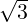
∕2 when |q| < 0.06. However, in numerical evaluations in REDUCE it is sufficient to use these transformations only until ℑτ > 0.7, i.e. until |q| < 0.11. In practice only two or three iterations are required and usually very much smaller values of |q| are achieved particularly when τ is purely imaginary i.e. q is real.In the numerical evaluations, if a result is real (or purely imaginary) it may happen that the result returned has a very small imaginary part (resp. real part). The ratio of the ‘deliquent’ part to the actual result is invariably smaller than current PRECISION and is due to rounding. Similarly if the true result is actually zero the result returned may have a very small absolute value – again smaller than the current PRECISION.
The Weierstrassian function is even and has a pole of order 2 at all lattice points. The Zeta and Sigma functions are only quasi-periodic on the lattice. Zeta is odd and has simple poles of residue 1 at all lattice points. The basic Sigma function σ(u,ω1,ω3) is odd and regular everywhere as is the function 𝜗1(u,τ) to which it is closely related. It has zeros at all lattice points. All three functions ℘, ζw and σ are homogenous of degrees -2, -1 and +1 respectively. The functions are related by
| ℘(u) = −ζw′(u), ζw(u) = σ′(u)∕σ(u), |
where the lattice parameters have been omitted for conciseness.
Rule sets are provided which implement all the properties such as double periodicity discussed above. For numerical evaluation the switches rounded and complex must both be ON and all three parameters must be numeric. It is not, however, necessary to ensure ℑ(ω3∕ω1) > 0 as the second and third parameters will be swapped if required.
Two commonly used alternative forms of the Weierstrassian functions in which they are regarded as functions of the lattice invariants g2 and g3 rather than the primitive periods ω1 and ω3 are provided:
Note that for output they are distinguished from the two discussed above by separating the first and second arguments by a vertical bar rather than a comma. The rule for differentiation of the Weierstrass function is simpler when expressed in this alternative:
| ℘′(u∣g2,g3)2 = 4℘(u∣g 2,g3)3 − g 2℘(u∣g2,g3) − g3. |
Three further Sigma functions are also provided:
These are all even functions, regular everywhere, homogenous of degree zero and doubly quasi-periodic. They are closely related to the theta functions 𝜗2, 𝜗3 and 𝜗4 respectively; but note the difference in numbering. For more information on the properties these sigma functions, see Lawden [Law89]; they do not appear in the NIST Digital Library of Mathematical Functions, but are included here for completeness.
Ten functions are provided:
These are operative when the switches rounded and complex are ON and their arguments are numerical. The first three are referred to as lattice roots and are related to the invariants g2,g3, the discriminant Δ = g23 − 27g32 and a closely related invariant G = g23∕(27g32) of the Weierstrassian elliptic function ℘. The lattice roots also appear in the numerical evaluation of the Weierstrass function. These lattice roots satisfy:
| e1 + e2 + e3 = 0, g2 = 2(e12 + e 22 + e 32), g 3 = 4e1e2e3. |
If the discriminant Δ vanishes or equivalently if G = 1, there are at most two distinct lattice roots and the elliptic function degenerates to an elementary one. The advantage of the invariant G is that it is a function of τ = ω3∕ω1 only.
The remaining three functions eta_1, eta_2 & eta_3 appear in the rules for the quasi-periodicity of the four sigma functions and of the Weierstrassian Zeta function. They are also used in the numerical evaluation of these functions when the switches rounded and complex are ON. The quasi-period relations are:
| ζw(u + 2ωj) | = ζw(u) + 2ηj | ||
| σ(u + 2ωj) | = −exp(2ηj(u + ωj))σ(u) | ||
| σk(u + 2ωj) | = exp(2ηj(u + ωj))σk(u) if j≠k | ||
| σj(u + 2ωj) | = −exp(2ηj(u + ωj))σj(u) | ||
| ζw(ωj) | = ηj | ||
| σj(ωj) | = 0, |
where the lattice parameters have been omitted for conciseness and j,k = 1…3. The quasi-period factors satisfy
| η1 + η2 + η3 = 0, η1ω3 − η3ω1 = η2ω1 − η1ω2 = η3ω2 − η2ω3 = iπ∕2. |
As well as the scalar-valued functions discussed above in this section, there are four functions which return a list as their value:
The first three are actually more efficient than calling the requisite scalar-valued functions individually and the fourth is used in the numerical evaluation of the Weierstrass functions regarded as functions of the invariants. These functions are only useful when the switches rounded and complex are ON and their arguments are all numerical. Note that the call sequence:
should reproduce the list {g2, g3}, perhaps with small rounding errors. The corresponding sequence with the function lattice_generators being called after lattice_invariants (and g2 & g3 replaced by w1 & w3), in general, will not produce the same pair of lattice generators since the generators are only defined up to a unimodular bilinear transformation.
For details of the algorithm used to calculate the lattice generators from the invariants see the DLMF:NIST chapter on Lattice Calculations.
The following inverses of the 12 Jacobi elliptic functions are available:-
Thus, for example,
A rule list is provided to simplify these functions for special values of their arguments such x = 0, k = 0 and k = 1, to implement the inverse function simplification formulae illustrated immediately above and for differentiation of these functions with respect to their two arguments.
Note that arccs is not defined to be an odd function of its first argument unlike cs. Instead it is taken to satisfy:
| arccs(−x,k) = 2K(k) − arccs(x,k). |
This is analogous to the situation in Reduce for acot where
| arctan(−x) = −arctan(x), arccot(−x) = π − arccot(x). |
This choice means that the range of (real) principal values of arccs is connected – it is the open set (0,2K(k)).
When their arguments are numerical, these functions will be evaluated numerically if the rounded and complex switches are both ON. Note that in some cases the result may have an imaginary part even if both arguments are real, hence the necessity of the switch complex being ON.
Note also that for arcdn and arcnd a zero value of the modulus k is excluded (since dn(x,0) = nd(x,0) = 1 ∀x).
As the Jacobi elliptic functions are doubly periodic, their inverse functions are multi-valued. The numerical value returned is the principal value v which lies in the parallelogram in the complex plane whose vertices are given in the table below. Other values of the inverse functions are indicated in the fifth column of the table below where m and n are arbitrary integers.
| Quarter | Periods | Principal | Other | |
| Function | p | q | Parallelogram | Values |
| arcsn | K | iK′ | −(p + q), −p + q, | 2mp + 2nq + (−1)mv |
| p + q, p − q. | ||||
| arccn | K | K + iK′ | −q, q, 2p + q, 2p − q. | 4mp + 2nq ± v |
| arcdn | iK′ | K | 0, 2p, 2(p + q), 2q. | 2mq + 4np ± v |
| arcns | K | iK′ | −(p + q), −p + q, | 2mp + 2nq + (−1)mv |
| p + q, p − q. | ||||
| arcnc | K | K + iK′ | −q, q, 2p + q, 2p − q. | 4mp + 2nq ± v |
| arcnd | iK′ | K | 0, 2p, 2(p + q), 2q. | 2mq + 4np ± v |
| arccd | K | iK′ | −q, q, 2p + q, 2p − q. | 4mp + 2nq ± v |
| arcdc | K | iK′ | −q, q, 2p + q, 2p − q. | 4mp + 2nq ± v |
| arcsd | K | K + iK′ | −(p + q), −p + q, | 2mp + 2nq + (−1)mv |
| p + q, p − q. | ||||
| arcds | K | K + iK′ | −(p + q), −p + q, | 2mp + 2nq + (−1)mv |
| p + q, p − q. | ||||
| arcsc | iK′ | K | −(p + q), −p + q, | 2mq + 2nq + (−1)nv |
| p + q, p − q. | ||||
| arccs | iK′ | K | −p, p, p + 2q, −p + 2q | 2mq + 2nq + (−1)nv |
When both arguments are real and |k| <= 1 and when there are certain restrictions on the range of the first parameter x (see the table below), then the principal value of the inverse function is real. It lies in the range given in the third column of the table below. (c.f. the inverse trigonometric functions). Other real values of the inverse functions are indicated in the fourth column of the table below where n is an arbitrary integer.
| Fn | Domain | Principal Value v | Other real values |
| arcsn: | |x| <= 1 | −K(k) <= v <= K(k) | 2nK(k) + (−1)nv |
| arccn: | |x| <= 1 | 0 <= v <= 2K(k) | 4nK(k) ± v |
| arccd: | |x| <= 1 | 0 <= v <= 2K(k) | 4nK(k) ± v |
| arcns: | |x| >= 1 | −K(k) <= v <= K(k) & v≠0 | 2nK(k) + (−1)nv |
| arcnc: | |x| >= 1 | 0 <= v <= 2K(k) & v≠K(k) | 4nK(k) ± v |
| arcdc: | |x| >= 1 | 0 <= v <= 2K(k) & v≠K(k) | 4nK(k) ± v |
| arcdn: | k′ <= x <= 1 | 0 <= v <= K(k) | 2nK(k) ± v |
| arcnd: | 1 <= x <= 1∕k′ | 0 <= v <= K(k) | 2nK(k) ± v |
| arcds: | |x| >= k′ | −K(k) <= v <= K(k) & v≠0 | 2nK(k) + (−1)nv |
| arcsd: | |x| <= 1∕k′ | −K(k) <= v <= K(k) | 2nK(k) + (−1)nv |
| arcsc: | x ∈ ℝ | −K(k) < v < K(k) | 2nK(k) + v |
| arccs: | x ∈ ℝ | 0 < v < 2K(k) & v≠0 2nK(k) + v | |
The numerical values of the inverse functions are calculated by expressing them in terms of the symmetric elliptic integral:
|
RF (x,y,z) = ∫
0∞1∕ 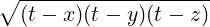 dt. |
For more details see the DLMF website: Inverse Jacobian Elliptic Functions.
| Function | Operator |
| am(u,k) | jacobiam(u,k) |
| sn(u,k) | jacobisn(u,k) |
| dn(u,k) | jacobidn(u,k) |
| cn(u,k) | jacobicn(u,k) |
| cd(u,k) | jacobicd(u,k) |
| sd(u,k) | jacobisd(u,k) |
| nd(u,k) | jacobind(u,k) |
| dc(u,k) | jacobidc(u,k) |
| nc(u,k) | jacobinc(u,k) |
| sc(u,k) | jacobisc(u,k) |
| ns(u,k) | jacobins(u,k) |
| ds(u,k) | jacobids(u,k) |
| cs(u,k) | jacobics(u,k) |
| Inverse Functions of the above: | |
| arcsn(u,k) | arcsn(u,k) |
| arccn(u,k) | arccn(u,k) |
| ... | |
| arccs(u,k) | arccs(u,k) |
| Complete Integral (1st kind) K(k) | ellipticK(k) |
| K′(k) | ellipticK!’(k) |
| Incomplete Integral (1st kind) F(ϕ,k) | ellipticF(phi,k) |
| Complete Integral (2nd kind) E(k) | ellipticE(k) |
| E′(k) | ellipticE!’(k) |
| Legendre Incomplete Int (2nd kind) E(u,k) | ellipticE(u,k) |
| Alternative Incomplete Int (2nd kind) D(u,k) | ellipticD(u,k) |
| Jacobi Incomplete Int (2nd kind) ℰ(u,k) | jacobiE(u,k) |
| Jacobi’s Zeta Z(u,k) | jacobiZeta(u,k) |
| 𝜗1(u,τ) | elliptictheta1(u,tau) |
| 𝜗2(u,τ) | elliptictheta2(u,tau) |
| 𝜗3(u,τ) | elliptictheta3(u,tau) |
| 𝜗4(u,τ) | elliptictheta4(u,tau) |
| ℘(u,ω1,ω3) | weierstrass(u,omega1,omega3) |
| ζw(u,ω1,ω3) | weierstrassZeta(u,omega1,omega3) |
| σ(u,ω1,ω3) | weierstrass_sigma(u,omega1,omega3) |
| σ1(u,ω1,ω3) | weierstrass_sigma1(u,omega1,omega3) |
| σ2(u,ω1,ω3) | weierstrass_sigma2(u,omega1,omega3) |
| σ3(u,ω1,ω3) | weierstrass_sigma3(u,omega1,omega3) |
| ℘(u∣g2,g3) | weierstrass1(u,g2,g3) |
| ζw(u∣g2,g3) | weierstrassZeta1(u,g2,g3) |
| Up | Next | Prev | PrevTail | Front |